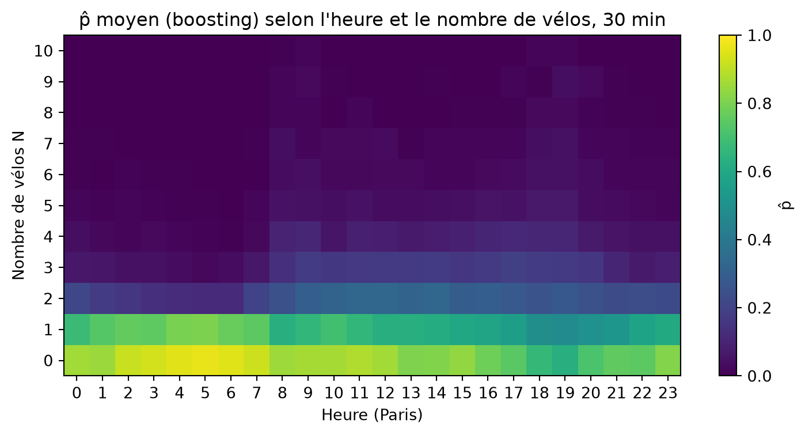
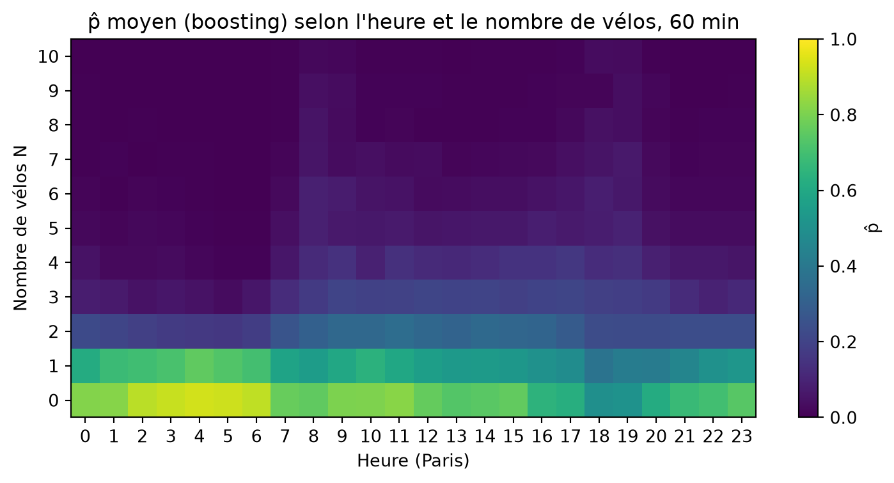

Pour chaque station \(s\) et chaque instant \(t\) (pas de 15 minutes), on définit le nombre total de vélos disponibles par
\[
N_{s,t} = M_{s,t} + E_{s,t}
\]
où \(M_{s,t}\) et \(E_{s,t}\) désignent respectivement les nombres de vélos mécaniques et électriques. La variable à prédire, pour un horizon \(h \in \{30, 60\}\) minutes, est définie par :
\[
Y_{s,t} = \mathbf{1}\{N_{s,t+h} < 2\}
\]
Elle vaut 1 si la station compte moins de deux vélos \(h\) minutes plus tard, et 0 sinon. Elle suit une loi de Bernoulli de paramètre \(p_{s,t}\) :
Les lignes pour lesquelles la station n’est pas observée ou est fermée à \(t\) ou à \(t+h\) sont exclues. Aucune valeur manquante n’est interpolée : les rares retards qui tombent dans une panne ou une fermeture restent NaN, et les modèles les remplacent par la médiane du train (calculée sur le train seul).
1.1 Préparation des données
La grille, la cible, la population et le découpage chronologique sont décrits en Partie 2. Ici, on construit simplement les jeux de données des deux horizons.
Code
for h in HORIZONS:print(f"horizon {h} min | nombre de variables : {len(S[h]['FEATS'])}")for nom in ["train", "val", "test"]: part = S[h][nom]print(f" {nom:5s} | lignes : {len(part):6d} | de {part['t'].min()} à {part['t'].max()}")print()
horizon 30 min | nombre de variables : 16
train | lignes : 219126 | de 2026-08-25 12:00:00+00:00 à 2026-09-23 09:15:00+00:00
val | lignes : 47612 | de 2026-09-24 13:45:00+00:00 à 2026-09-30 21:15:00+00:00
test | lignes : 59574 | de 2026-09-30 22:00:00+00:00 à 2026-10-08 19:45:00+00:00
horizon 60 min | nombre de variables : 16
train | lignes : 219144 | de 2026-08-25 12:00:00+00:00 à 2026-09-23 08:45:00+00:00
val | lignes : 47476 | de 2026-09-24 13:45:00+00:00 à 2026-09-30 20:45:00+00:00
test | lignes : 59322 | de 2026-09-30 22:00:00+00:00 à 2026-10-08 19:15:00+00:00
2 Modèles de Références
Deux règles sans apprentissage servent de points de comparaison : la classe majoritaire (toujours prédire « pas de pénurie ») et la persistance (l’état dans \(h\) minutes est supposé égal à l’état actuel).
Les paramètres \(\pi\), \(\mu_{j,y}\), \(\sigma^2_{j,y}\) sont estimés sur le jeu d’apprentissage uniquement. La variable dow (0 à 6) n’est pas utilisée : un modèle gaussien la lirait comme une grandeur ordonnée (dimanche « loin » de lundi) ; on garde weekend et l’heure.
Code du Bayes naïf
class BayesNaifGaussien:"""Classifieur de Bayes naïf gaussien, écrit à la main."""def fit(self, X, y, eps=1e-9): X, y = np.asarray(X, dtype=float), np.asarray(y)self.classes_ = np.unique(y)# pi_ : proportion de chaque classe (partie Bernoulli de Y)self.pi_ = np.array([np.mean(y == k) for k inself.classes_])# Hypothèse 1 : une moyenne et un écart-type par variable et par classeself.mu_ = np.array([X[y == k].mean(axis=0) for k inself.classes_])self.sigma_ = np.array([X[y == k].std(axis=0) for k inself.classes_]) + epsreturnselfdef _log_densite(self, X, k): mu, sigma =self.mu_[k], self.sigma_[k]# log-densité gaussienne de chaque variable (hypothèse 1) log_f_1d = (-0.5* np.log(2* np.pi) - np.log(sigma)- (X - mu) **2/ (2* sigma **2)) # (n, nb_variables)# Hypothèse 2 : indépendance conditionnelle -> somme des log-densitésreturn np.sum(log_f_1d, axis=1) # (n,)def _log_posterieurs(self, X):return np.array([np.log(self.pi_[k]) +self._log_densite(X, k)for k inrange(len(self.classes_))]) # (2, n)def predict_proba(self, X): lp =self._log_posterieurs(np.asarray(X, dtype=float)) lp = lp - lp.max(axis=0) # stabilité numérique p = np.exp(lp)return (p / p.sum(axis=0)).T # colonne 1 = P(Y = 1 | x)def predict(self, X, tau=None):if tau isNone:returnself.classes_[np.argmax(self._log_posterieurs(np.asarray(X, dtype=float)), axis=0)]return (self.predict_proba(X)[:, 1] > tau).astype(int)class _BayesImpute:"""Médiane du train pour les NaN, puis Bayes naïf gaussien écrit à la main."""def fit(self, X, y):self.imp_ = _imp().fit(X)self.nb_ = BayesNaifGaussien().fit(self.imp_.transform(X), y)returnselfdef predict_proba(self, X):returnself.nb_.predict_proba(self.imp_.transform(X))
Ce que le modèle a appris
Code
S30 = S[30]FEATS_NB = [f for f in S30["FEATS"] if f !="dow"]imp = SimpleImputer(strategy="median").fit(S30["train"][FEATS_NB]) # médiane du trainX_train, y_train = imp.transform(S30["train"][FEATS_NB]), S30["train"]["y"].to_numpy()X_val, y_val = imp.transform(S30["val"][FEATS_NB]), S30["val"]["y"].to_numpy()bayes = BayesNaifGaussien().fit(X_train, y_train)print("Formes :", bayes.mu_.shape, bayes.sigma_.shape)print("Proportions de classes (pi_) :", bayes.pi_.round(4))pd.DataFrame({"mu y=0": bayes.mu_[0], "mu y=1": bayes.mu_[1],"sigma y=0": bayes.sigma_[0], "sigma y=1": bayes.sigma_[1]}, index=FEATS_NB).round(2)
Formes : (2, 15) (2, 15)
Proportions de classes (pi_) : [0.8969 0.1031]
mu y=0
mu y=1
sigma y=0
sigma y=1
bikes_available
14.33
1.26
11.44
1.68
docks_available
15.90
25.27
12.13
8.81
fill
0.48
0.05
0.30
0.07
d_bikes_15
0.02
-0.16
2.41
1.64
d_bikes_30
0.04
-0.35
2.72
1.86
d_bikes_60
0.09
-0.77
3.64
2.51
bikes_24h
13.88
4.00
11.41
4.71
hour_sin
0.00
-0.07
0.71
0.70
hour_cos
0.02
-0.11
0.71
0.70
weekend
0.28
0.24
0.45
0.43
capacity
31.09
27.24
12.70
9.16
paris
0.61
0.71
0.49
0.45
latitude
48.86
48.86
0.03
0.03
longitude
2.33
2.33
0.06
0.06
st_empty_rate
0.09
0.22
0.10
0.12
Vérification de la formule à la main
Code
x = X_val[:1]f1 = np.exp(bayes._log_densite(x, 1))[0]f0 = np.exp(bayes._log_densite(x, 0))[0]pi1, pi0 = bayes.pi_[1], bayes.pi_[0]print("formule à la main :", pi1 * f1 / (pi1 * f1 + pi0 * f0))print("predict_proba :", bayes.predict_proba(x)[0, 1])
formule à la main : 2.558295028715075e-111
predict_proba : 2.5582950287150643e-111
Erreurs( apprentissage, validation, val sklearn)
Code
erreur_apprentissage = np.mean(bayes.predict(X_train) != y_train)erreur_val = np.mean(bayes.predict(X_val) != y_val)print(f"Erreur d'apprentissage : {erreur_apprentissage:.3f}")print(f"Erreur de validation : {erreur_val:.3f}")# Vérification contre scikit-learn (doit être très proche)sk = GaussianNB().fit(X_train, y_train)print("Erreur val sklearn :", round(np.mean(sk.predict(X_val) != y_val), 3),"| ma classe :", round(erreur_val, 3))
Erreur d'apprentissage : 0.158
Erreur de validation : 0.160
Erreur val sklearn : 0.16 | ma classe : 0.16
Le modèle ne suppose aucune forme pour la loi de \(Y\) sachant \(X\). Pour une ligne \(x\), il cherche les \(k\) lignes d’apprentissage les plus proches et estime la probabilité par leur proportion de positifs :
Les variables sont standardisées (moyenne et écart-type calculés sur le jeu d’apprentissage uniquement) : sinon les variables de grande échelle, comme N, domineraient la distance.
Le nombre de voisins \(k\) est un hyperparamètre : un \(k\) petit donne un modèle très flexible (variance élevée), un \(k\) grand donne un modèle plus lisse (biais élevé). Il est choisi sur la validation en maximisant l’AP.
Le modèle n’apprend rien : il mémorise l’apprentissage. Deux lignes voisines dans le temps étant presque identiques, il est particulièrement sensible à une évaluation mal construite ; le découpage chronologique évite ce biais.
La distance souffre de la dimension (ici une vingtaine de variables) et de variables redondantes (les retards successifs de N).
Poids du K-NN pondéré
Code du k-NN
class FeatureWeighter(TransformerMixin, BaseEstimator):"""Multiplie les colonnes (déjà standardisées) par des poids fixes : distance euclidienne pondérée pour le k-NN."""def__init__(self, weights=None):self.weights = weightsdef fit(self, X, y=None):returnselfdef transform(self, X):return np.asarray(X, dtype=float) * np.asarray(self.weights, dtype=float)def _knn_pondere(k, weights):return make_pipeline(_imp(), StandardScaler(), FeatureWeighter(tuple(weights)), KNeighborsClassifier(n_neighbors=k, n_jobs=-1))def knn_weights(train, feats, h=30, seed=0, n_repeats=3):"""Poids des variables pour le k-NN pondéré, appris DANS LE TRAIN seulement. La dernière semaine du train est mise de côté ; une forêt est ajustée sur le reste (avec un embargo de h minutes, pour qu'aucune étiquette de la forêt ne recouvre la semaine mise de côté) ; le poids d'une variable est son importance par permutation (baisse de l'AP quand on la mélange) sur la semaine mise de côté. Poids négatifs ramenés à 0, puis normalisés pour que le poids moyen soit 1. Renvoie une Series indexée par variable.""" cut = train["t"].max() - pd.Timedelta(days=7) fit = train[train["t"] < cut - pd.Timedelta(minutes=h)] hold = train[train["t"] >= cut] m = foret(seed).fit(fit[feats], fit["y"]) imp = permutation_importance(m, hold[feats], hold["y"], scoring="average_precision", n_repeats=n_repeats, random_state=seed, n_jobs=-1) w = pd.Series(np.clip(imp.importances_mean, 0, None), index=feats)if w.sum() ==0: w[:] =1.0return w / w.sum() *len(feats)
Le k-NN usuel donne le même poids à toutes les variables, ce qui bruite la distance. Le k-NN pondéré multiplie chaque variable standardisée par un poids appris dans le train seul : la dernière semaine du train est mise de côté, une forêt est ajustée sur le reste, et le poids d’une variable est son importance par permutation (baisse de l’AP quand on la mélange) sur cette semaine. Les poids sont normalisés (poids moyen = 1) ; \(k\) est celui du k-NN usuel.
poids = pd.DataFrame({f"{h} min": R[h]["selection"]["poids_knn"] for h in HORIZONS})poids.sort_values("30 min", ascending=False).round(2)
30 min
60 min
bikes_available
10.52
7.34
fill
1.95
2.67
hour_sin
0.55
1.07
d_bikes_15
0.53
0.41
st_empty_rate
0.41
1.22
hour_cos
0.32
1.07
docks_available
0.25
0.28
d_bikes_60
0.10
0.14
capacity
0.10
0.19
d_bikes_30
0.10
0.08
latitude
0.07
0.14
longitude
0.06
0.18
weekend
0.02
0.10
paris
0.02
0.02
bikes_24h
0.00
0.08
5 Arbre de décision
Code de l’arbre
def _arbre(depth):return make_pipeline(_imp(), DecisionTreeClassifier(max_depth=depth, min_samples_leaf=50, random_state=0))def tune(make, grille, train, val, feats):"""Hyperparamètre qui maximise l'AP sur la validation. Renvoie (meilleur, scores, modèle ajusté).""" scores, fitted = {}, {}for v in grille: m = make(v).fit(train[feats], train["y"]) scores[v] = average_precision_score(val["y"], m.predict_proba(val[feats])[:, 1]) fitted[v] = m best =max(scores, key=scores.get)return best, scores, fitted[best]
Un arbre partitionne l’espace des variables par une suite de questions du type « \(x_j \le c\) ? », puis prédit dans chaque feuille la proportion de positifs de l’apprentissage. À chaque nœud, le couple \((j, c)\) retenu maximise la baisse d’impureté de Gini :
Un arbre profond sépare parfaitement l’apprentissage mais généralise mal (variance élevée) ; un arbre peu profond est stable mais trop simple.
La complexité est contrôlée par la profondeur maximale (choisie sur la validation parmi quelques valeurs, en maximisant l’AP) et par une taille minimale de feuille (50 lignes).
Aucune standardisation n’est nécessaire, et l’arbre capte des interactions (par exemple « peu de vélos et en baisse et heure de pointe »).
Son avantage est l’interprétabilité : le chemin de la racine à une feuille est une règle lisible.
Une forêt moyenne \(B\) arbres, chacun ajusté sur un échantillon bootstrap des lignes et, à chaque nœud, sur un sous-ensemble aléatoire de variables (\(\sqrt{d}\) par défaut) :
où \(\nu\) est le taux d’apprentissage et \(f_m\) un arbre. Le modèle minimise la log-vraisemblance négative ; pour cette perte, le gradient négatif au point \(i\) vaut :
\[
y_i - \hat p_m(x_i),
\]
c’est-à-dire que chaque nouvel arbre \(f_m\) est ajusté sur les résidus de probabilité du modèle courant. (scikit-learn utilise aussi la hessienne de la perte, ce qui ne change pas l’idée.)
Contrairement à la forêt, les arbres ne sont pas indépendants : chacun corrige les erreurs des précédents, ce qui réduit surtout le biais.
Ici : HistGradientBoostingClassifier, 300 itérations, \(\nu = 0{,}1\), sans arrêt anticipé (l’arrêt anticipé de scikit-learn tire au hasard une partie des lignes d’apprentissage, ce qui n’a pas de sens pour des données temporelles).
Les variables sont regroupées en classes avant de construire les arbres, ce qui rend l’ajustement rapide, et les valeurs manquantes sont gérées nativement.
C’est en général la famille la plus performante sur des données tabulaires ; un trop grand nombre d’itérations peut sur-ajuster l’apprentissage.
8 Choix du seuil
Chaque modèle fournit une probabilité \(\hat p(x)\) ; la décision est \(\hat y = \mathbf 1\{\hat p(x) > \tau\}\). Le seuil \(\tau\) de chaque modèle est choisi sur la validation par la même règle pour tous, puis figé avant la semaine de test.
9 Comparaison des modèles sur la validation
Pour chaque horizon, tous les modèles sont ajustés sur le train. Le réglage de \(k\) (k-NN, repris pour le k-NN pondéré) et de la profondeur (arbre) se fait sur la validation, par la précision moyenne (AP). Le seuil de chaque modèle est choisi sur la validation, par la même règle pour tous. Le test n’est pas utilisé ici.
Une ligne est positive (\(Y=1\)) quand la station a moins de deux vélos à \(t+h\). Le modèle prédit « pénurie » quand sa probabilité \(\hat p\) dépasse le seuil \(\tau\).
Indicateur
Définition
Lecture
TP (vrais positifs)
pénuries annoncées et réelles
à maximiser
FP (faux positifs)
pénuries annoncées, mais qui n’ont pas lieu (fausses alarmes)
Chaque point marque le seuil retenu ; l’étoile est la règle de persistance. Un modèle fait mieux que la persistance au même rappel si sa courbe passe au-dessus de l’étoile.
TipLecture de la figure
Quatre modèles (arbre, k-NN pondéré, forêt, boosting) ont des courbes presque superposées, nettement au-dessus du Bayes naïf et du k-NN simple.
La pondération des variables améliore nettement le k-NN ; le Bayes naïf pâtit probablement de l’hypothèse d’indépendance, peu compatible avec des retards fortement corrélés.
À 30 min, l’étoile de la persistance est très proche des meilleures courbes : à rappel égal, le gain de précision est faible.
À 60 min, l’étoile s’en éloigne davantage, ce qui est cohérent avec la dégradation de la persistance quand l’horizon augmente.
Aux seuils retenus, les meilleurs modèles gagnent un peu en rappel sans gain net de précision ; le Bayes naïf et le k-NN simple produisent nettement plus de fausses alarmes.
Les écarts entre les quatre meilleurs modèles sont faibles et les seuils sont choisis sur la validation : la conclusion repose sur le jeu de test.
Le point est le seuil choisi (F1 maximal sur la validation) ; la ligne pointillée est le F1 de la persistance. La ligne pointillée horizontale est le F1 de la persistance : une valeur unique, car cette règle n’a pas de seuil à faire varier.
La forme en « colline » des courbes s’explique ainsi :
Seuil τ bas (proche de 0) : le modèle alerte presque toutes les lignes ; le rappel est élevé mais la précision très faible, donc le F1 est bas.
Seuil τ élevé (proche de 1) : le modèle n’alerte que s’il est très sûr ; la précision est élevée mais le rappel faible. À τ = 1, aucune ligne ne dépasse le seuil, il n’y a plus aucune alerte : le rappel est nul et le F1 tombe à 0 (la chute à droite des courbes).
Entre les deux, le F1 passe par un maximum : c’est le seuil retenu.
TipLecture de la figure
Les quatre meilleurs modèles (arbre, k-NN pondéré, forêt, boosting) ont des courbes presque superposées, avec un maximum large autour de τ ≈ 0,3 (F1 ≈ 0,75 à 30 min, ≈ 0,69 à 60 min) : le choix du seuil est peu sensible.
Le gain de F1 sur la persistance est faible à 30 min (≈ +0,01) et un peu plus net à 60 min (≈ +0,03), cohérent avec une persistance qui se dégrade quand l’horizon augmente.
Le k-NN simple reste sous la persistance quel que soit le seuil ; la pondération des variables le ramène au niveau des meilleurs modèles.
Le Bayes naïf a une courbe basse et presque plate ; son seuil retenu est très élevé (τ ≈ 0,95), signe de scores extrêmes, et son maximum est fragile car il est proche de la chute du F1.
Les écarts entre les meilleurs modèles sont faibles et les seuils sont choisis sur la validation : la conclusion repose sur le jeu de test.
9.2 Comparaison au même rappel que la persistance
Code
for h in HORIZONS: res = R[h] y_val = res["val"]["y"].to_numpy() sc = SC_VAL[h] r_pers = recall_score(y_val, PERS_VAL[h]) p_pers = precision_score(y_val, PERS_VAL[h])print(f"horizon {h} min | persistance : précision {p_pers:.3f} à rappel {r_pers:.3f}")for nom in res["models"]:print(f" {nom:12s} : précision {precision_at_recall(y_val, sc[nom], r_pers):.3f} au même rappel")print()
horizon 30 min | persistance : précision 0.734 à rappel 0.735
bayes_naif : précision 0.555 au même rappel
knn : précision 0.570 au même rappel
arbre : précision 0.737 au même rappel
knn_pondere : précision 0.742 au même rappel
foret : précision 0.750 au même rappel
boosting : précision 0.752 au même rappel
horizon 60 min | persistance : précision 0.664 à rappel 0.665
bayes_naif : précision 0.495 au même rappel
knn : précision 0.570 au même rappel
arbre : précision 0.675 au même rappel
knn_pondere : précision 0.688 au même rappel
foret : précision 0.702 au même rappel
boosting : précision 0.704 au même rappel
La persistance n’a pas de seuil à régler : c’est une règle fixe, qui n’offre qu’un seul point de fonctionnement (précision et rappel). Pour la comparer équitablement aux modèles, on règle le seuil \(\tau\) de chaque modèle de façon à atteindre le même rappel que la persistance (0,735 à 30 min, 0,665 à 60 min), puis on compare les précisions : à nombre égal de pénuries détectées, le modèle qui déclenche le moins de fausses alarmes est le meilleur. Cette comparaison est faite sur la validation.
TipLecture de les résultats
Forêt et boosting sont les meilleurs. Ils dépassent la persistance de 1,6 à 1,8 point à 30 min (0,750 et 0,752 contre 0,734) et d’environ 4 points à 60 min (0,702 et 0,704 contre 0,664). À nombre égal de pénuries détectées, ils déclenchent donc moins de fausses alarmes. L’écart se creuse quand l’horizon s’allonge, car la persistance se dégrade plus vite.
L’arbre et le k-NN pondéré sont proches de la persistance à 30 min (0,737 et 0,742) et la dépassent modérément à 60 min (0,675 et 0,688).
Le Bayes naïf et le k-NN usuel sont nettement en dessous de la persistance (0,555 et 0,570 à 30 min). Leur rappel élevé au seuil retenu s’obtient au prix de nombreuses fausses alarmes. Le gain du k-NN pondéré sur le k-NN usuel (0,742 contre 0,570) montre l’intérêt de pondérer les variables.
L’avantage des modèles reste modéré : quelques points de précision, ce qui est cohérent avec le gain limité en F1 observé sur la semaine de test (Partie 4).
TipBonus : lecture des probabilités prédites
Ces figures (validation seulement) montrent ce que les scores signifient concrètement : la forêt aléatoire et le boosting sont comparés à la fréquence réellement observée. Le seuil retenu pour le boosting est tracé en pointillés.
Probabilité de pénurie selon le nombre de vélos actuel.
p̂ moyen du boosting selon l’heure et le nombre de vélos.
Code
for h in HORIZONS: pv = TMP[h][TMP[h]["N"] <=10].pivot_table(index="N", columns="heure", values="p_hgb", aggfunc="mean") fig, ax = plt.subplots(figsize=(9, 4)) im = ax.imshow(pv.values, origin="lower", aspect="auto", cmap="viridis", vmin=0, vmax=1) ax.set_xticks(range(len(pv.columns))) ax.set_xticklabels(pv.columns) ax.set_yticks(range(len(pv.index))) ax.set_yticklabels(pv.index.astype(int)) ax.set(xlabel="Heure (Paris)", ylabel="Nombre de vélos N", title=f"p̂ moyen (boosting) selon l'heure et le nombre de vélos, {h} min") fig.colorbar(im, label="p̂") plt.show()


Exemple d’une station sur trois jours. La zone rouge marque les instants où la pénurie s’est réellement produite (\(Y=1\)).
Code
for h in HORIZONS: tmp = TMP[h] sid = SID if SID inset(tmp["station_code"]) else tmp.groupby("station_code")["y"].sum().idxmax() w = tmp[tmp["station_code"] == sid].copy() w["tl"] = w["t"].dt.tz_convert(TZ) debut = pd.Timestamp("2026-09-26", tz=TZ) sel = w[(w["tl"] >= debut) & (w["tl"] < debut + pd.Timedelta(days=3))] w = sel iflen(sel) else w.iloc[:288] fig, ax = plt.subplots(figsize=(11, 4)) ax.plot(w["tl"], w["p_hgb"], color="C1", label="p̂ (boosting)") ax.fill_between(w["tl"], 0, 1, where=(w["y"] ==1).to_numpy(), color="red", alpha=0.15, step="mid", label="pénurie réelle (y = 1)") ax.axhline(TAU_B[h], color="gray", ls=":") ax.set(ylim=(0, 1), ylabel="p̂", title=f"Station {sid} : probabilité de pénurie à {h} min") ax2 = ax.twinx() ax2.plot(w["tl"], w["N"], color="C0", alpha=0.5, label="N (nombre de vélos)") ax2.set_ylabel("N") ax.legend(loc="upper left") ax2.legend(loc="upper right") plt.show()